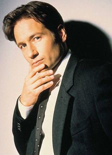

Fox William "Spooky" Mulder is a highly skilled FBI Special Agent who brought his often-criticized method of formulating unconventional theories to the X-files.
He was dismissed from the FBI in 2001 and, in 2002, he went on the run from the law with his former partner, Dana Scully. In 2008, he complied with a request from the FBI to assist, in an unofficial capacity, with the investigation of a single case. (The X-Files: I Want to Believe) In 2016, he returned to the FBI and along with Scully they reopened the X-files and resumed their investigations into them.
